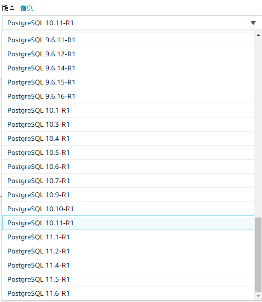
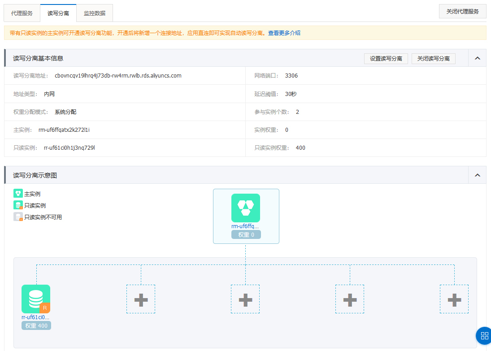
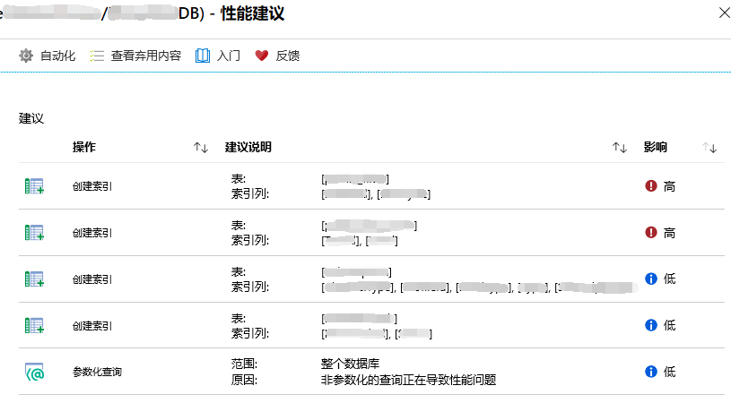
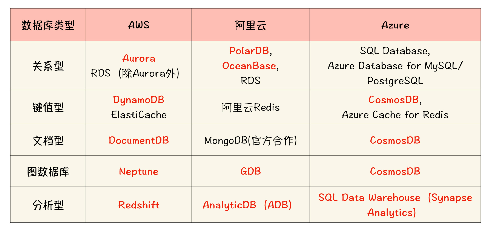
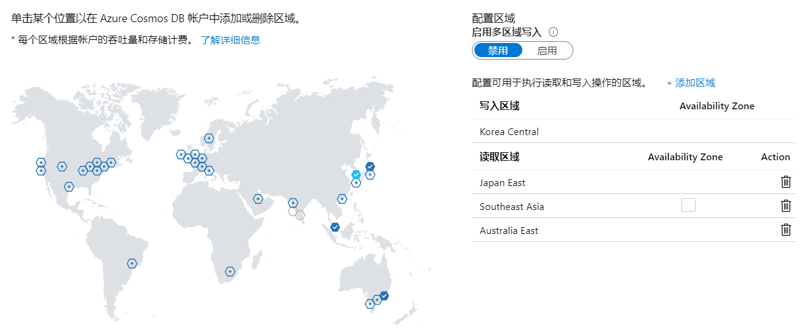

- 00 开篇词 云计算，这是开发者最好的时代.md.html
- 01 区域和可用区：欢迎来到云端数据中心.md.html
- 02 云虚拟机（一）：云端“攒机”，有哪些容易忽视的要点？.md.html
- 03 云虚拟机（二）：眼花缭乱的虚拟机型号，我该如何选择？.md.html
- 04 云虚拟机（三）：老板要求省省省，有哪些妙招？.md.html
- 05 云硬盘：云上IO到底给不给力？.md.html
- 06 云上虚拟网络：开合有度，编织无形之网.md.html
- 07 云端架构最佳实践：与故障同舞，与伸缩共生.md.html
- 08 云上运维：云端究竟需不需要运维？需要怎样的运维？.md.html
- 09 什么是PaaS？怎样深入理解和评估PaaS？.md.html
- 10 对象存储：看似简单的存储服务都有哪些玄机？.md.html
- 11 应用托管服务：Web应用怎样在云上安家？.md.html
- 12 云数据库：高歌猛进的数据库“新贵”.md.html
- 13 云上大数据：云计算遇上大数据，为什么堪称天作之合？.md.html
- 14 云上容器服务：从Docker到Kubernetes，迎接云原生浪潮.md.html
- 15 无服务器计算：追求极致效率的多面手.md.html
- 16 云上AI服务：云AI能从哪些方面帮助构建智能应用？.md.html
- 结束语 与云计算一起，迈向未来.md.html
- 捐赠
12 云数据库：高歌猛进的数据库“新贵”
你好，我是何恺铎。
说起数据库，相信你一定不会陌生。从开源的MySQL、PostgreSQL，到商业级的Oracle、SQL Server，再到新兴的各类NoSQL数据库，都是我们应用架构中的常客。
而近年来随着云计算的兴起，云数据库作为一支新生力量，一路高歌猛进，打破了数据库市场的原有格局，也进入了越来越多开发者的视野当中。这类PaaS服务的朴素思想就是，将数据库服务搬到云上，让用户更方便轻松地使用、管理和维护数据库。
由于数据库的产品形态天生具有独立性，容易标准化封装，而且用户侧又往往有运维复杂的痛点。所以这类数据库托管服务一经推出，很快就受到了用户的广泛欢迎，也当仁不让地成为了云PaaS服务中的杰出代表。你一定要来认识它。
云上的关系型数据库
关系型数据库的应用在业界是最普遍的，也是云数据库首先进入的领域。这里的先行者同样是AWS，早在2009年就发布了RDS（Relational Database Service），后来其他的厂商也纷纷开始跟进。
RDS其实并不指代单个服务，而是一般针对每个数据库引擎，都有一个对应的服务，比如RDS for MySQL或RDS for PostgreSQL。并且，同一种数据库按照不同的版本，也有比较严格的分支选项，你在创建时就会被要求选定这个版本。

AWS RDS for PostgreSQL的版本选择列表
那么，RDS类服务和传统关系型数据库有什么区别呢？这恐怕是一个绕不开的问题。对于云数据库，我想这样回答你，它们既没有区别，又有很大的区别。
怎么理解这句看似矛盾的话呢？
所谓的没有区别，指的是云数据库在外部交互的层面上，保持了和传统“原版”数据库几乎完全一致的编程接口和使用体验。
比如说，你针对MySQL编写的SQL代码和应用层连接代码，包括你很熟悉和经常会使用的连接管理工具，除了要更改连接字符串和参数之外，都能够几乎不经修改地在云数据库的MySQL服务上运行。
另外，针对某个数据库的某个具体版本，云厂商们会把它的功能、内部机制完整地保留下来，以求获得最大程度的兼容性。早期比较简单的云数据库实现原理，是充分利用云上已经提供的虚拟机、云磁盘等IaaS层面的资源，在隔离的环境下进行数据库镜像的安装。而后来技术实力比较强大的厂商，还能够做到对数据库源码和模块的深度定制，在保证兼容性的前提下，进行许多对用户透明的云端适配和优化。
所以，云数据库尽管是一个受限的PaaS环境（比如它通常无法让你直接访问底层的服务器），但在使用体验上和传统数据库是相当一致的。你大可放心，之前积累的MySQL和PostgreSQL的知识，在RDS上也大都可以适用。在云上，你也同样能够找到和安装一些数据库的常用插件，来增强PaaS数据库的功能。
而同时我们又说，云数据库和传统数据库有很大的区别，这是指在搭建、运维、管理层面，云数据库提升了一个层次，实现了相当程度的智能化和自动化，极大地提升了用户友好度，降低了使用门槛。比如灵活的性能等级调整、详尽的监控体系、攻击防护机制等等，这些许多在传统数据库中需要借助额外工具或产品的功能，在云数据库服务是默认内置，可以开箱即用的。
除了这些基本能力外，我还想着重强调两个最具代表性的云上关系型数据库的高级特性。
一个是支持读写分离。当并发数量上升时，关系型数据库容易出现性能瓶颈。这时比较有用的办法，就是实现基于多库同步的读写分离。读写分离虽然是常见的架构思路，但你要是不熟悉细节的话，手工配置起来可并没有那么容易。
云数据库就帮我们解决了这个烦恼，你只要在产品后台略加操作，就可以启用这个功能：从创建从库到建立同步，再到读写流量分发，云数据库都能自动完成。看上去高大上的架构实践，在云数据库的帮助下，就轻松地“飞入寻常百姓家”了。

阿里云RDS中建立的读写分离
一个是支持自动调优。对于数据库来说，同样和性能有关的一个重要工作，就是性能的调优。以前我们经常需要手动地观测性能瓶颈，找出热点查询，再考虑是否有改进性能的办法。而在现代云数据库中，都自带有性能分析与改进的模块，能够自动地发现性能热点，甚至还能够智能地给出调整建议，比如进行个别语句的调整，甚至添加额外的索引等等。
这个性能分析和自动调优的能力，是将生产运行数据和服务内置的AI模型进行了结合，是真正的智能化运维，毫无疑问，这大大增强了云上数据库的竞争力。如果你有线上的云数据库，一定不要忘记观察它自动给出的结果和建议，很可能会给你带来惊喜和帮助。
给你举个例子，下面这张图中是Azure SQL Database自动给出的性能优化建议。你可以看到，它建议我在某些表的某些列创建索引，还提醒我部分查询应当进行参数化。而且它将各个建议还按照对性能影响程度的高低进行了排序，可以说是非常贴心了。

Azure SQL Database中的自动性能调优建议
以上的种种特点，一起构成了云上关系型数据库的独特竞争力，也为它赢得了认可。
新一代云原生数据库有什么特征？
在通过RDS类关系型数据库服务，建立起公众对于云数据库的认知和信任以后，聪明的云计算工程师们又开始了新的征程。这次，云厂商们不满足于封装现有的数据库，而是极具野心地开始构建完全为云设计、能够充分发挥云的特点和优势的数据库。
这就是新一代云原生数据库的由来。
你可能也听说过AWS Aurora、阿里PolarDB、Azure Cosmos DB这几个产品的鼎鼎大名，它们正是云原生数据库中的杰出代表。
出于生态发展和降低学习难度的需要，绝大多数的云原生数据库仍然保留了SQL等常见接口（有的还支持不同SQL方言的选择），但除此以外，云原生数据库大都进行了全面革新和重新设计，有的云会大刀阔斧地改造开源代码，有的甚至脱离了现有包袱，完全重新构建。
这样的尝试取得了巨大的成功，业界也逐渐形成了一系列不同领域的云原生数据库矩阵，大大拓展了云上数据库的范畴和影响力。
我这里也为你整理了一张表格，按照厂商和云数据库的类型进行了梳理和比较。其中，标红的部分是相当值得你关注的自研云原生数据库。

还有其他厂商也有相当出彩的云原生数据库，我没有收录到表格中，比如腾讯云的CynosDB和华为云的GaussDB等，也都是云原生数据库的杰出代表。
那么，云原生数据库在使用时，有什么优势和特点呢？
首先，更强的可扩展性。
得益于原生设计的计算存储分离架构，云原生数据库可以支撑更大规模的数据量，突破了传统关系数据库服务的单机单库限制。比如说，关系型云原生数据库能够脱离典型的数TB的容量上限，达到单库数十TB甚至百TB的级别。这和它单独专门为云设计的存储架构是分不开的。
算力方面也同样如此，云原生数据库可以利用云快速地进行水平扩展，迅速调整、提升数据库的处理能力。在分布式架构的加持下，它相比以前单机数据库的计算查询能力有了成倍的提升。所以，云原生数据库往往善于处理大并发的负载，可以提供很高的QPS。
其次，更高的可用性和可靠性。
和传统RDS服务不同，云原生数据库往往默认就是多副本高可用的，数据同步、读写分离等高级特性是作为原生机制的一部分天生存在的。像Amazon Aurora中的存储部分，就自动包含了分布在3个可用区、多达6份的数据副本。
得益于原生数据同步机制的底层设计，云原生数据库还能很方便地支持跨区域的实例复制，在进一步增强冗余的同时，还能便于就近服务全球用户。比如下图所示，就是Azure Cosmos DB跨区域复制的设置页面，你可以在这里轻松地指定区域，让数据在全球范围流转和同步。

Azure Cosmos DB的全球跨区域复制设置
此外，对于多种数据模型（multi-model）的支持，也是云原生数据库的一大特征。除了兼容关系型数据库外，云厂商还会针对不同的场景进行针对性的研发和优化，结合数据库业界最新的流行趋势，推出适合不同形态和查询范式的云数据库，与NoSQL数据库进行积极竞争。
比如说，AWS的键值型数据库DynamoDB和图数据库Neptune，都是相应领域中非常优秀的产品。而Azure的Cosmos DB，则采用了另外一种做法，在一个数据库产品中同时内置了多种数据模型的支持，也同样取得了成功。
云原生数据库还往往有低成本启动的优势，它能够自然地跟随业务增长。大多数的云原生数据库，在存储上不需要你预先设置容量大小，而是会随着存储占用自动扩展；在计算上，也有部分云数据库开始推出无服务器版本，比如AWS的Aurora Serverless，它不需要使用固定的计算资源，这在面对间歇偶发或者难以预测的工作负载时，非常经济实用。
云数据库为什么能够不断占领市场？
不论是封装传统关系数据库的RDS类服务，还是新一代的云原生数据库，都是一经推出就广受欢迎，市场占有率不断提高。而像Oracle这样的传统商业数据库，近几年却身影落寞，在市场上节节败退。这是为什么呢？
除了我们前面提到的易用性和丰富功能外，在云上，云厂商还能端到端地掌控影响一个数据库的设计和性能的所有因素，可以为它配备最新、最好的软硬件组合，这也是云数据拥有旺盛生命力的根本原因之一。比如说，许多的云数据库，都会使用RDMA远程高速访问、NVMe SSD等先进技术。
另外，借助云计算平台，云数据库拥有非常好的流量入口。云计算平台让这些新兴的企业级数据库变得触手可及，非常方便你去学习和尝试。这和同样设计精妙，但“养在深闺人未识”的一些企业级数据库形成了鲜明对比。所以现在反过来，老牌企业级数据库需要和云来合作，这就是入口效应所驱使的。
扩展：通过云平台，云数据库还能够更快地推向市场。一旦有了新的特性，可以很快地更新发布，甚至以预览形式在早期就招募用户。这还造就了云数据库的速度优势。
所以你看，一个行业的进步和颠覆，往往是从一个更高的层面来进行的，也就是我们常说的“降维打击”。云数据库之于传统数据库，是用完全不同的研发模式、商业模式和产品形态，从另一个层面发起了挑战，从而具备了竞争优势，这就像早年汽车替代了马车一样。这也是为什么Gartner会大胆预测，到2023年，全球3/4的数据库会跑在云上。
回到我们用户的视角，你什么时候应该考虑使用云数据库呢？
可以这样说，云数据库现在已经进入了相当成熟的时期。所以，在云上大多数的场合，我都推荐你使用云数据库，而不是用虚拟机自建数据库。你更多需要考虑的是，如何在云数据库中选择匹配你需求的型号，同时要注意可迁移性和厂商绑定的问题。
如果是老的应用迁移，或者是其他需要与自建数据库保持高度兼容性的场合，你不妨使用经典的RDS服务，实现平滑上云；如果你的应用场景中数据量大、性能要求高，或者是没有历史负担，那你可以考虑直接“一步到位”，拥抱理念更加先进的云原生数据库。
课堂总结与思考
今天，我们主要学习和讨论了云数据库，它完全改变了数据库的产品形态，既大幅减轻了部署维护负担，也让云计算的弹性计算和存储能力得以充分施展。
云上的关系型数据库在保证接口兼容性的同时，还拥有智能化和自动化的特点，能够帮我们进一步地减轻管理压力，以及提出性能优化建议。而全新一代的云原生数据库，更是放开手脚实现了面向云的原生架构，在性能、可用性和可扩展性上，都展现出了巨大优势。
在前面第9讲关于PaaS服务的问题回复中，许多同学都提到了在使用云数据库，我想也正是被它的这些特点所吸引。
这一讲，我还埋下了一个伏笔。在前面的云数据库对比表格中，最后一行对应着云上的分析型数据库，这也是云数据库很重要的一个分支。在下一讲讨论云上大数据时，我会更详细地给你介绍。
今天我留给你课后思考的问题是：
- 近期某著名的SaaS服务商遭遇了人为数据删除，造成了很大损失。在这里，我们不深究这个事故的细节，但从云数据库的角度，你知道如何充分利用云数据库的特性，来尽量避免“删库跑路”的事情发生吗？
- 分区是传统数据库设计和性能优化的常用手段。对于能够支撑很大数据量级的云原生数据库，分区技术还有没有应用的价值和必要呢？
欢迎给我留言，如果你觉得有收获，也欢迎你把这篇文章分享给你的朋友。谢谢你的阅读，我们下期再见。
© 2019 - 2023 Liangliang Lee. Powered by gin and hexo-theme-book.